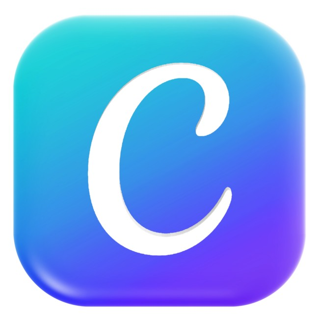
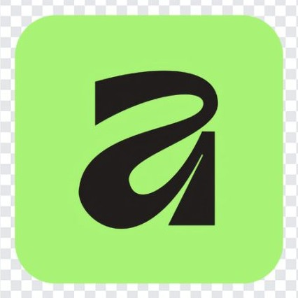
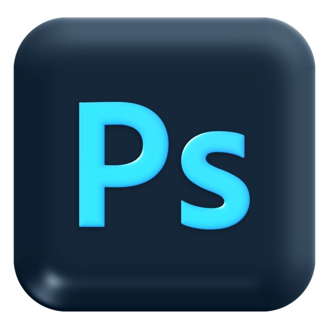
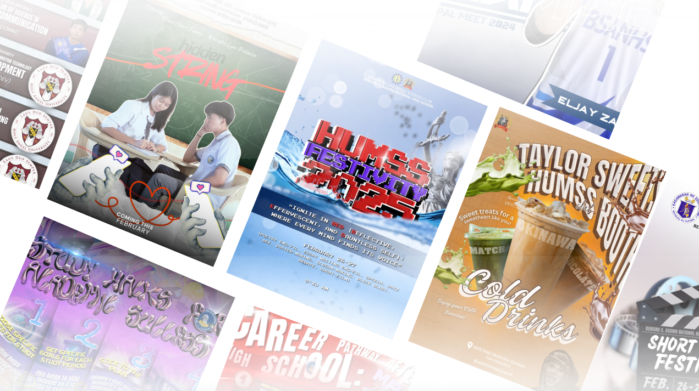
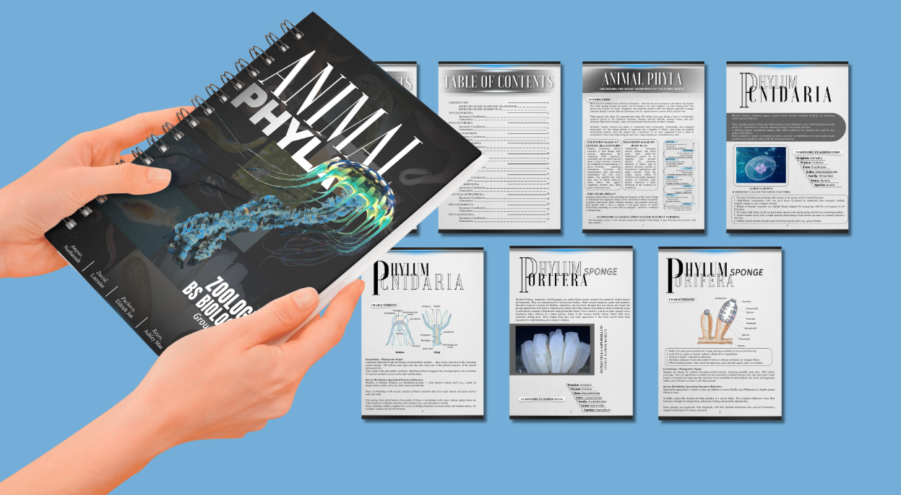

This website serves as my personal graphic design portfolio, highlighting my creative projects, design skills, and continuous growth in visual storytelling.
This portfolio showcases my self-taught projects and creative explorations, reflecting how curiosity, passion, and continuous learning can produce visually meaningful results. Whether designing for enjoyment or helping others turn their ideas into reality, I find fulfillment in every stage of the creative journey.
Learn more about my background and education
See my technical and soft skills
View my Graphic Design
Get in touch with me
Hi! I am Charles, a 19-year-old Information Technology student with a strong interest in graphic design and digital creativity. This portfolio is submitted for academic purposes and documents my learning progress, projects, and skills development.
I consistently refine my work output to strengthen my professional background, while actively enhancing my portfolio to better present my skills and capabilities.
Benigno S. Aquino National High School
HUMSS
Benigno S. Aquino National High School
San Miguel Elementary School
 Python
Python

Canva
Affinity
PhotoshopCreating visually appealing digital designs
Artistic creations using digital tools
Efficiently organizing and prioritizing tasks
Maintaining an active and healthy lifestyle
Organizing and managing data effectively
Basic knowledge in Python, Java, and HTML
Analyzing and solving technical challenges
Working effectively in group settings
I'm constantly working to improve my skills through:
My goal is to continue developing both technical and soft skills that will help me succeed in the IT industry, particularly in areas related to data management and digital design.
This section showcases my design projects and creative outputs, demonstrating my growing skills in graphic design and visual communication.

A branding and logo design project that focuses on visual identity, consistency, and clean aesthetics. This work reflects my ability to create designs that communicate ideas clearly and creatively.

A magazine layout design project that emphasizes typography, composition, and visual balance. This project showcases my skills in organizing content into an engaging and readable design

A tarpaulin design created for a school organization, focusing on bold visuals, clear messaging, and audience engagement. This project highlights my ability to design for large-format prints.

A coffee shop poster design that combines warm colors, inviting visuals, and balanced layout to attract viewers. This project highlights my skills in creative concept development, typography, and visual storytelling.
A career guidance poster designed to deliver information in a visually appealing and easy-to-understand format. This project showcases my skills in layout design, typography, and visual hierarchy.
Each project reflects my continuous learning journey in graphic design. I approach every design with creativity, attention to detail, and a passion for improving my skills while producing meaningful and visually engaging work.
Feel free to reach out to me through any of the following platforms. I'm always open to discussing new opportunities, collaborations, or just having a friendly chat!
Whether you have a project in mind, want to collaborate, or just want to say hello, I'd love to hear from you. Don't hesitate to reach out!